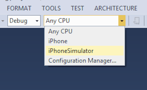
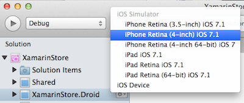
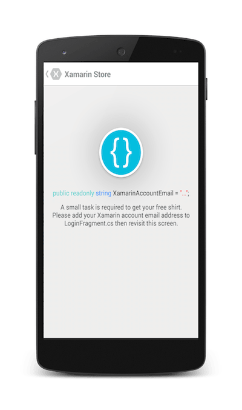

Objective 1: Hands-On with Xamarin
Estimated Time: 15 minutes
Goals
In this exercise we will build and run the Xamarin Store application. This will ensure you have your development environment setup properly and prepare you for your Xamarin University education.

This is intended to be a guided exercise with a Xamarin University instructor, however if you are doing this on your own, you can follow the steps below.
Note: the following instructions are using Xamarin Studio 5, running on Mac OS X to build and run the application. You can also use Windows with Visual Studio if you have a business-level license. Remember you will still need a Mac OS X build host to use the iOS Simulator. In addition, you can run the application on either Android or iOS, even though the instructions only walk you through iOS.
Steps
- Download the Xamarin Store application from xamarin.com/sharp-shirt.
- Unzip the contents of the xamarin-store-app-master.zip (if you downloaded the zip file) and place the entire solution into a known location such as your desktop. In this example, I have placed it on the desktop of my Mac.
- Open the XamarinStore.sln solution in Visual Studio or Xamarin Studio.
- Once the project loads, you can select which version (iOS or Android) you want to run by right-clicking on the project, or clicking the gear icon to the right of the project, and selecting Set as Startup Project from the context menu.
- Set the Build Configuration to be Debug and select the iPhone Simulator from the drop down.
- Build and run the application by clicking the Play button in the Toolbar. In this example, I am running it using the iOS Simulator, however you can run it on the Android Emulator, or even on a physical iOS or Android device.
- The application should launch and display different T-shirts. It needs an Internet connection to function properly.
- Select the style of T-shirt you'd like to get (Male or Female) by tapping on one of the pictures.
- Select the size and color of the shirt and then tap Add to Basket to add it to your shopping cart - notice the nice animation that draws your eye to the shopping cart icon in the toolbar at the top of the application.
- Finally, tap the shooping cart icon to place your order and tap the Checkout button on the basket screen.
You should get a screen indicating that the application isn't quite complete - you need to make a change to the code in order to get it to place the order. - The message tells you the exact source file you need to edit (
ViewControllers/LoginViewController.csin iOS andFragments/LoginFragment.cs). - Open up the proper source file and look for a
TODO:comment indicating you need to set your email address. - Go ahead and add your email address - for example:
- Build and run the application again, this time when you place your order, you should get a password prompt.
- Enter the password you used when registering your Xamarin account and enter / verify the information the application shows you.
- Congratulations! In just a few weeks, you will be the proud owner of a new C# T-shirt! Enjoy your new wardrobe!


|  |  |
For instructions on running the application on a physical device, refer to the documentation on Setting up devices for development.

 |
 |
Note: You will need a registered Xamarin email address - if you don't have one yet, you can register for free at https://store.xamarin.com/account/register.
// TODO: Enter your Xamarin account email address here // If you do not have a Xamarin Account please sign up here: https://store.xamarin.com/account/register readonly string XamarinAccountEmail = "joe.cool@xamarin.com";

Summary
In this exercise, we built and ran a cross-platform Xamarin application and verified that the Xamarin tools are properly installed on your machine. You saw an example project that uses a variety of .NET classes as well as unique iOS and Android features to display and animate the presented information.